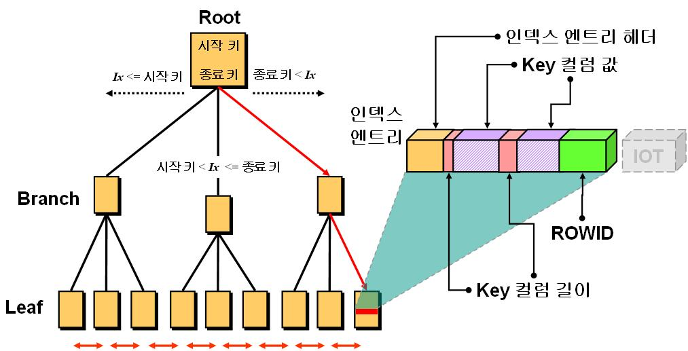
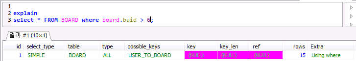
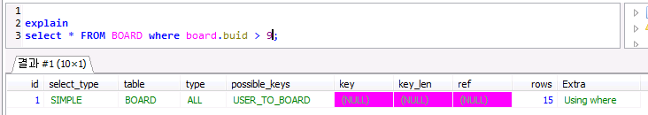
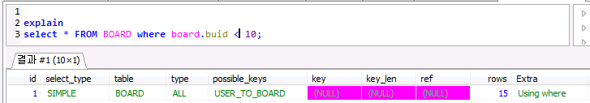
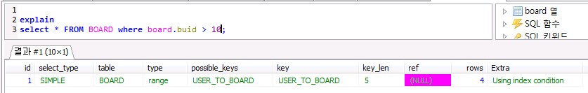
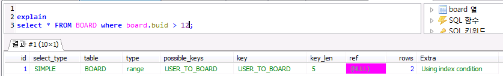

5. SQL 최적화 및 성능 튜닝¶
본 내용은 DBGuide.net 목차/내용을 기반으로 작성자의 입장에서 요점을 정리한 문서입니다.
5.1. 옵티마이저¶
옵티마이저란 사용자가 질의한 SQL문에 대해 최적의 실행 방법을 결정하는 역할을 수행한다. 다른말로 실행계획(Execution Plan)을 결정한다.
현재 대부분의 관계형 데이터베이스들은 비용기반 옵티마이저만 사용하고 있다. 하지만 규칙기반 옵티마이저를 이해하는 것이 최적화 작업을 이해하는데 도움이 될 것이다.
5.1.1. 규칙기반 옵티마이저¶
규칙기반 옵티마이저는 우선 순위를 가지고 실행계획을 생성한다. 실행계획 생성시 SQL문을 실행하기 위한 인덱스 유무, SQL문에서 사용하는 연산자의 종류, 참조하는 객체(힙 테이블, 클러스터 테이블)의 종류등이 참조된다.
우선순위 순서대로 중요한 규칙을 보면 다음과 같다.
- Single row by rowid : ROWID를 통해서 테이블에서 하나의 행을 액세스하는 방식이다. 하나의 행을 액세스하는 가장 빠른 방법이다.
- Single row by unique or primary key : 유일 인덱스를 토해서 하나의 행을 액세스 하는 방식이다.
- Composite index : 복합 인덱스에 동등 조건으로 검색하는 경우
- Single column index : 단일 칼럼 인덱스에 〈=〉 조건으로 검색하는 경우
- Bounded range search on indexed columns : 인덱스가 생성되어 있는 칼럼에 양쪽 범위를 한정하는 형태로 검색하는 방식
- UnBounded range search on indexed columns : 인덱스가 생성되어 있는 칼럼에 한쪽 범위만 한정하는 형태로 검색하는 방식
- Full table scan : 전체 테이블을 액세스하면서 조건절에 주어진 조건을 만족하는 행만을 결과로 추출하는 방식
예시:
SELECT ENAME
FROM EMP
WHERE JOB = 'SALESMAN'
AND SAL BETWEEN 3000 AND 6000
JOB과 SAL에 모두 인덱스가 주어졌을 때 JOB 인덱스 검색 방식이 SAL보다 우선순위가 높으므로 Single column index 방식을 선택하여 실행계획이 작성된다.
5.1.2. 비용기반 옵티마이저¶
비용기반 옵티마이저는 위의 규칙기반 옵티마이저를 좀더 최적화 한 방식이다. 위 예제에서 범위 검색이 단일 검색보다 우선순위에는 뒤에 있지만 실제로 검색속도가 더 빠를 수 있다. 이러한 단점을 극복하기 위해 출현하였다. 비용기반 옵티마이저는 SQL문을 처리하는데 필요한 비용이 가장 적은 실행계획을 선택하는 방식이다. 여기서 비용이란 소요시간 또는 자원 사용량을 의미한다. 테이블, 인덱스, 칼럼 등의 다양한 객체 통계정보와 시스템 통계 정보를 이용하므로 정확한 통계정보를 유지하는 것은 비용기반 최적화에서 중요한 요소이다.
5.1.3. 옵티마이저의 실행계획¶
실행계획이란 어떤 순서로 SQL을 실행할지 결정하는 작업이다. Oracle의 실행계획은 조인 순서, 조인 기법, 액세스 기법, 최적화 정보, 연산 등이 있다. 조인 순서는 참조하는 테이블의 순서를 뜻한다. 액세스 기법은 하나의 테이블을 액세스 할때 인덱스 스캔을 할지 전체 테이블 스캔을 할지에 대한 계획이고 최적화 정보는 실행계획의 각 단계마다 예상되는 비용 사항을 표시한 것이다.
5.1.4. SQL 처리 흐름도¶
내부적인 처리 절차를 시각적으로 표현한 도표이다.
예시:
SELECT ...
FROM TAB1 A, TAB2 B
WHERE A.KEY = B.KEY
AND A.COL1 = :condition1
AND B.COL2 = :condition2

5.2. 인덱스(Index)¶
인덱스란 원하는 데이터를 빠르게 찾기 위해 탐색키를 갖는 테이블을 뜻한다.
인덱스는 원하는 데이터를 쉽게 찾을 수 있도록 돕는 책의 색인와 유사한 개념이다. 인덱스는 테이블을 기반으로 선택적으로 생성할 수 있는 구조이다. 테이블에 인덱스를 생성하지 않아도 되고 여러개를 생성해도 된다. 인덱스의 기본적인 목적은 검색 성능의 최적화이다. 즉, 검색 조건을 만족하는 데이터를 인덱스를 통해 효과적으로 찾는데 돕는다.
하지만 INSERT, UPDATE, DELETE 등과 같은 DML 작업은 테이블과 함꼐 인덱스를 변경해야 하기 때문에 오히려 느려질 수 있다는 단점이 존재한다. 따라서 테이블의 성격을 분석해야 하며 INSERT, UPDATE가 많을 경우 인덱스를 사용하지 않는 편이 나을 수 있다.
인덱스의 종류에는 밀집 인덱스, 희소 인덱스, B+ 트리 인덱스, 클러스터드 인덱스가 있다. 그외에는 spatial index, 해시 인덱스, 풀텍스트 인덱스 등이 있다고 한다.
5.2.1. 인덱스를 사용하기 좋은 조건¶
- 기본키와 외래키에 인덱스를 생성하면 좋다. 그 이유는 여러가지가 있다. 첫째로 식별자로 자주 접근하기 때문이다. 두번째로 레코드 삽입시 기본키 중복검사가 쉽기 때문이다. 세번째로 2개의 테이블을 JOIN할 경우 외래키를 가지고 있는 테이블에서 레코드를 검색하기 좋다. 네번째로 외래 테이블에서 레코드를 삭제하는 경우 제약조건이 위배되는지 검색할때 좋다. (기본적으로 DBMS는 자동으로 생성해줌)
- 대용량 테이블에서 일부분을 검색하는 경우가 많을 때
- 인덱스를 적용한 칼럼의 도메인(종류)가 다양할 때 적용하면 좋다. 그 이유는 레코드가 여러 그룹으로 분할되어 검색 효율이 좋아지기 때문이다. 반대의 경우는 매우 좋지 않다.
- 칼럼이 정수형 일때 적용하는 것이 좋다.
5.2.2. 인덱스를 사용하기 나쁜 조건¶
- 갱신(UPDATE)이 빈번한 속성에는 인덱스를 사용하지 않는게 좋다.
- 갱신(INSERT)이 빈번한 테이블에는 인덱스를 사용하지 않는게 좋다.
- 속성의 도메인(종류)이 단순할 경우 인덱스로 사용하지 않는게 좋다. (예를들어 성별은 인덱스를 적용하기 좋지않다.)
- VARCHAR, 실수형, 날짜형 속성에는 인덱스를 만들지 않는것이 좋다.
- 테이블의 데이터가 적을 경우에는 인덱스를 생성해도 사용하지 않을 것이다. 충분히 많을때 사용해라.
- 대량의 데이터를 삽입해야되는 경우 인덱스를 삭제하고 삽입해야 된다. 내 지인중 인덱스를 만든 상태에서는 대량의 데이터를 삽입할 때는 20시간이 걸렸으나 인덱스를 삭제하고 삽입했을 경우 15분이 걸렸다고 한다.
5.2.3. 인덱스의 크기¶
인덱스는 테이블의 속성 중 탐색키 에 해당하는 속성만 갖기 때문에 실제 테이블 크기의 10~20% 정도의 크기를 갖는다.
5.2.4. 밀집 인덱스(Dense index), 희소 인덱스(Sparse index)¶
기초가 되는 인덱스 개념이다. 밀집 인덱스는 모든 레코드에 대한 인덱스가 있다. 희소 인덱스는 레코드중 일부분에 대한 인덱스만 구성한다. B+ tree에서 Root 및 Branch Node는 희소 인덱스 Leaf Noe는 밀집 인덱스이다.
5.2.5. 트리 기반 인덱스¶
성능 향상을 위한 SQL 작성법, 네이버 hello world
자료구조 B-Tree 를 확인해 보라.
위 그림은 DBMS에서 가장 일반적으로 사용되는 B+-트리 인덱스 이다. 가장 위에 있는 노드가 있는 블록을 Root Block(인덱스 노드) 그 밑이 Branch Block(인덱스 노드) 가장 밑이 Leaf Block 이다. Branch Block은 키와 다음 단계의 블록을 가르키는 포인터를 가지고 있다. Leaf Block은 트리의 가장 아래 단계에 존재한다.
리프 블록(Leaf Block, 데이터 노드) 은 인덱스를 구성하는 칼럼의 키와 해당 데이터의 위치를 가르키는 레코드 식별자(RID, Record Identifier/Rowid) 로 구성되어 있다. 인덱스 데이터는 인덱스를 구성하는 칼럼의 값으로 정렬된다. 만약 인덱스 데이터의 값이 동일하면 레코드 식별자의 순서대로 저장된다.
이런 B+-트리 는 〈=〉, 〈BETWEEN〉, 〈>〉 등과 같은 연산자로 검색하는 범위 검색 모두에 적합한 구조이다.
인덱스에서 원하는 값을 찾는 과정은 다음과 같다.
- 브랜치 블록 의 가장 왼쪽 값이 찾고자 하는 값보다 작거나 같으면 왼쪽 포인터로 이동
- 찾고자 하는 값이 브랜치 블록 의 값 사이에 존재하면 가운데 포인터로 이동
- 오른쪽에 있는 값보다 크면 오른쪽 포인터로 이동
- 리프노드에 도달하게 되면 (키값 - Rowid) 쌍을 찾는다.
만약 찾고자 하는 값이 〈BETWEEN 139 AND 160〉 이라면 139를 가진 리프 노드 를 찾은 후 링크드 리스트를 따라가면서 160 까지의 값을 읽는다. 양방향 링크드 리스트 이므로 가능한 검색 방법이다.
5.2.6. 클러스터형 인덱스¶
쉽게 말해 리프 블록에 인덱스 키 칼럼 외에도 테이블의 나머지 칼럼이 모두 함께 있는 형태이다.
클러스터형 인덱스 특징
- 리프 페이지가 곧 데이터 페이지다. 따라서 테이블 탐색에 필요한 레코드 식별자가 리프 페이지에 필요없다.
- 리프 페이지의 모든 로우 (=데이터)는 인덱스 키 칼럼 순으로 물리적으로 정렬되어 저장된다.
5.2.7. 클러스터드 인덱스¶
테이블의 파일을 순차 파일을 유지한다. 이때 기준으로 하나의 칼럼을 정렬의 기준으로 둔다. 이후 그리고 데이터 노드에는 블록의 첫번째 주소를 가르키게 한다.
이 인덱스는 인접한 데이터 조회, 즉 범위 질의에 유용하다. 그 이유는 물리적 디스크에서 가깝에 저장되어 있기 때문이다.
예를들어 EMPNAME이라는 속성을 클러스터링 인덱스로 사용한다면 실제 테이블의 레코드(파일안에 있는)는 이 속성을 기준으로 정렬되어있다.
5.3. 전체 테이블 스캔과 인덱스 스캔¶
5.3.1. 전체 테이블 스캔(Full Table Scan)¶
테이블에 존재하는 모든 데이터를 읽어 가면서 조건에 맞으면 결과로서 추출하고 조건에 맞지 않으면 버리는 방식으로 검색한다. 전체 테이블 스캔방식으로 읽은 블록들은 메모리에서 곧 제거되므로 재사용성이 낮다.
사용되는 경우
- SQL문에 조건이 존재하지 않는 경우
- SQL문의 주어진 조건에 사용 가능한 인덱스가 존재하지 않는 경우
- 옵티마이저의 취사 선택 : 조건을 만족하는 데이터가 많은 경우 대부분의 블록을 액세스 해야한다고 판단되었을때
5.3.2. 인덱스 스캔¶
데이터베이스에서 주로 사용되는 트리 기반 인덱스를 중심으로 설명한다. 인덱스 스캔은 인덱스를 구성하는 칼럼의 값을 기반으로 데이터를 추출하는 액세스 기법이다. 주로 인덱스 유일 스캔, 인덱스 범위 스캔, 인덱스 역순 범위 스캔 등이 있다.
- 인덱스 유일 스캔 : 유일 인덱스(Unique Index) 를 사용하여 단 하나의 데이터를 추출하는 방식이다. 유일 인덱스 구성 칼럼에 모두 〈=〉로 값이 주어질 경우에만 가능한 인덱스 스캔 방식이다.
- 인덱스 범위 스캔 : 인덱스를 이용하여 한 건 이상의 데이터를 추출하는 방식이다. 유일 인덱스의 구성 칼럼 모두에 대해 〈=〉로 값이 주어지지 않은 경우 와 비유일 인덱스를 이용하는 모든 액세스 방식 은 인덱스 인덱스 범위 스캔 방식으로 데이터를 액세스 한다.
- 인덱스 역순 범위 스캔은 리프 블록의 양 방향 링크를 이용하여 내림 차순으로 데이터를 읽는 방식이다. 이 방식을 이용하여 최대값을 쉽게 찾을 수 있다.
인덱스 범위 스캔 / 역순 범위 스캔은 결국 더블 링크드 리스트를 순회하며 값을 찾는 방식이다.
5.3.3. 전체 테이블 스캔 vs 인덱스 스캔¶
인덱스 스캔 은 인덱스에 존재하는 레코드 식별자를 이용하여 검색하는 데이터의 정확한 위치를 알고서 데이터를 읽는다. 그렇기 때문에 인덱스 스캔 방식에서는 불필요하게 다른 블록을 더 읽을 필요가 없다. 따라서 한번의 I/O 요청에 한 블록씩 읽는다. 그러나 전체 테이블 스캔 은 데이터를 읽을 때 한번의 I/O 요청으로 여러 블록을 한꺼번에 읽는다. 어차피 테이블의 모든 데이터를 읽을 것이라면 한 번 읽기 작업을 할 때 여러 블록을 함께 읽는 것이 효율적이다.
대용량 데이터 중에서 극히 일부의 데이터를 찾을 때, 인덱스 스캔 방식 은 인덱스를 이용해 몇 번의 I/O만으로 원하는 데이터를 쉽게 찾을 수 있다. 그러나 전체 테이블 스캔은 테이블의 모든 데이터를 읽으면서 원하는 데이터를 찾아야 하기 때문에 비효율적인 검색을 하게 된다. 그러나 반대로 테이블의 대부분의 데이터를 찾을 때는 한 블록씩 읽는 인덱스 스캔 방식 보다는 한번에 여러 블록씩 읽는 전체 테이블 스캔 방식 이 유리할 수 있다.
5.3.4. Index Scan 대신 Full Scan 예제(외래키 인덱스)¶
MySQL의 explain select … 구문 을 이용하여 실행 계획(Execution plan)을 살펴보았다. Freign key 제약조건 이 걸려있지만 모든 SELECT 문에 인덱스 테이블을 사용하는 것은 아니다.
Explain 사용법 을 읽어보자
범위가 넒은 경우 Full Scan을 한다.
  Scan Range가 작을때 인덱스 테이블을 스캔한다.
 결론) 한 블록씩 읽는 Index Scan보다 한번의 I/O 요청으로 여러 블록을 읽는 Full Scan이 유리한 경우가 존재한다.
5.4. 조인 수행 원리¶
조인이란 두 개 이상의 테이블을 하나의 집합으로 만드는 연산이다.
5.4.1. WHERE VS ON Condition 은 성능 차이가 없다.¶
ON절에 WHERE절의 조건을 주어도 성능향상이 없다. 두개의 조건은 교환가능하다고 한다. 조인 비교
결론은 큰차이 없으니 SQL은 가독성 좋게 짜는게 좋다.
5.4.2. WHERE VS SUB QUERY WHERE 은 성능 차이는?¶
양쪽 조건절중 어느곳에 놓는것이 성능에 좋을지 테스트 해보았다. 결과적으로 성능상의 이점이 없었다. 그리고 서브 쿼리는 특별한 쿼리이므로 이런 조건상의 비교에 큰 의미가 없는것 같다.
5.4.3. NL Join¶
프로그래밍의 중첩 반복문과 유사한 방식으로 조인을 수행한다.
예시:
FOR 선행 테이블 읽음 -> 외부 테이블
FOR 후행 테이블 읽음 -> 내부 테이블
(선행 테이블과 후행 테이블 조인)
동작 방법
- 선행 테이블에서 주어진 조건을 만족하는 행을 찾음
- 선행 테이블의 조인 키 값을 가지고 후행 테이블에서 조인 수행
- 선행 테이블의 조건을 만족하는 모든 행에 대해 1번 작업 반복 수행
5.4.4. Sort Merge Join¶
조인 칼럼을 기준으로 데이터를 정렬하여 조인을 수행한다.
동작 방법
- 선행 테이블에서 주어진 조건에 만족하는 행을 찾음
- 선행 테이블의 조인 키를 기준으로 정렬 작업을 수행
- 1~2번 작업을 선행 테이블의 조건을 만족하는 모든 행에 대해 반복 수행
- 후행 테이블에서 주어진 조건에 만족하는 행을 찾음
- 후행 테이블의 조인 키를 기준으로 정렬 작업을 수행
- 3~4번 작업을 선행 테이블의 조건을 만족하는 모든 행에 대해 반복 수행
- 정렬된 결과를 이용하여 조인을 수행하며 조인에 성공하면 추출버퍼에 넣음
Sort Meger Join은 대량의 정렬 작업이 필요로 하므로 Hash Join이 성능상 더 유리하다고 한다.
5.4.5. Hash Join¶
해싱 기법을 이용하여 조인을 수행한다.
동작 방법
- 선행 테이블에서 주어진 조건을 만족하는 행을 찾음
- 선행 테이블의 조인 키를 기준으로 해쉬 함수를 적용하여 해쉬 테이블을 생성 (조인 칼럼과 SELECT 절에서 필요로 하는 칼럼도 함께 저장됨)
- 1~2번 작업을 선행 테이블의 조건을 만족하는 모든 행에 대해 반복 수행
- 후행 테이블에서 주어진 조건을 만족하는 행을 찾음
- 후행 테이블의 조인 키를 기준으로 해쉬 함수를 적용하여 해당 버킷을 찾음 (조인 키를 이용하여 실제 조인될 데이터를 찾음)
- 조인에 성공하면 추출버퍼에 넣음
- 3~5번 작업을 후행 테이블의 조건을 만족하는 모든 행에 대해서 반복 수행
Hash Join은 작은 테이블을 선행 테이블로 사용하는 것이 성능 관점에서 좋다고 한다. Hash Join은 해싱 함수의 특성상 동등 조인에만 사용할 수 있다.